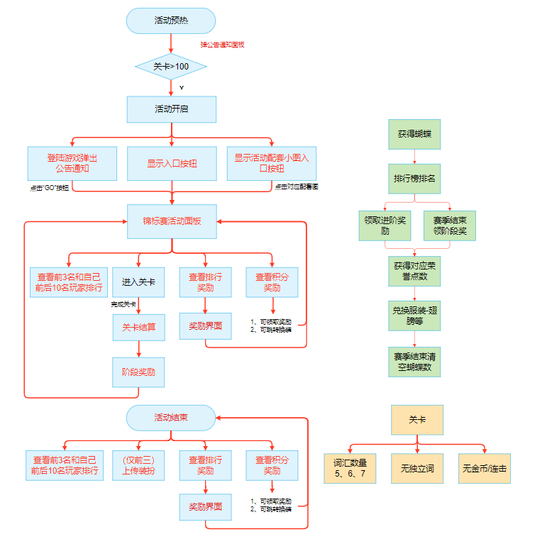
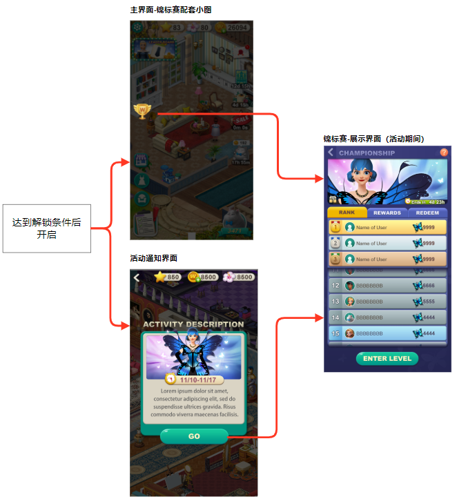
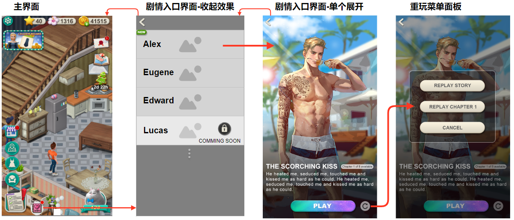
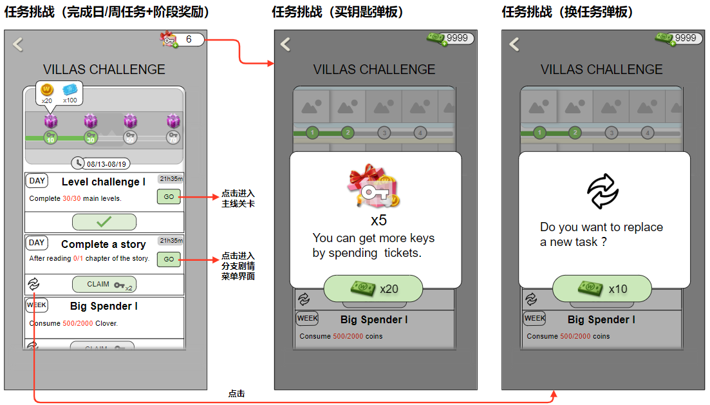
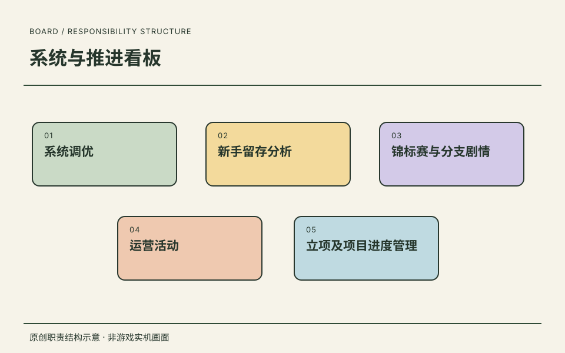

01
竞技活动的完整生命周期
- 具体工作
- 撰写 Word Villas 锦标赛策划案，覆盖独立参与路径、预热开启、排行结算、休赛展示与未领奖补发。
- 工作价值
- 设计考虑活动前中后及异常分支，不只给出一个排行榜面板，体现规则完整性与长期目标组织。
署名锦标赛设计 ↗02
剧情与任务的交互交付
- 具体工作
- 撰写分支剧情、限时任务文档，明确入口、锁定、重玩、任务返回、领奖状态和埋点需求。
- 工作价值
- 把内容入口、操作反馈与验证事件一起交付，为程序、UI 和后续分析提供一致的规则。
署名剧情与活动设计 ↗03
跨组协作与部分 PM 工作
- 具体工作
- 在约百人规模项目中协作程序、美术与剧情组，并配合运营和 UI；承接项目排期、任务拆分、组内工作验收与项目文档。
- 工作价值
- 将需求变成可排期、可交接、可验收的交付；项目协作规模不代表直属人数。
上线设计与交互资料 ↗
职责依据本人履历与确认；原图补充设计证据，经营结果另行说明来源与口径。
AUTHORED DESIGN / 贝塔科技 · Word Villas
署名策划与交互设计
以三份正文明确署名的策划案，展开竞技活动、角色剧情与任务目标的设计。我的任职角色：高级系统策划，2020.03—2021.02。
三份文档均明确写有“文档撰写人：吴天昊”。本人确认相关功能已从设计推进到上线；下方保留历史规则与迭代，不代表每个方案细节均为最终版本。美术执行属于团队相关岗位，设计目标与示例排名、奖励、价格均不是实际业绩。
重点署名策划案
活动生命周期、参与路径、阶段奖励、排名结算、休赛展示与未领奖补发。
文档撰写人：吴天昊 · 修订记录 2020.03—2020.07
角色与章节入口整合、未解锁与待更新状态、重玩菜单和剧情漏斗埋点。
文档撰写人：吴天昊 · 修订记录 2020.04
每日与周任务、钥匙进度、阶段领奖、任务跳转返回、换任务与跨期清理。
文档撰写人：吴天昊 · 修订记录 2020.08
资料按 Word Villas 的任务标题、角色与场景参考接入该项目，不将同公司其他项目自动视为这些文档的成果。完整内部文档、剧本、埋点数据、奖励表与经济配置不公开。
锦标赛的生命周期与奖励闭环

《锦标赛-排行榜系统文档》流程示意图 · 原始嵌入图设计问题
如何让主线进度不同的玩家参与独立竞技，并让活动结束后的奖励和展示仍然可用？
文档产出
正文含多轮修订记录，覆盖规则、关卡、奖励、门票与埋点。门票规则曾随版本调整，图中旧阈值和示例不作为当前线上配置；这里只公开流程与交互关系。
关键方案
- 以独立挑战关替代只依赖主线连击的排行路径，解决已经完成主线的老玩家缺少竞争入口的问题。
- 将预热、解锁、活动开启、关卡结算、阶段奖励、赛季结算和休赛期串联起来；排名奖励与荣誉兑换分别承接短期和长期目标。
- 休赛期继续查看奖励和兑换；前三名可上传独立装扮展示，与主界面和剧情换装记录区分。
- 记录未领奖玩家，跨入新赛季时通过邮件补发；参与、阶段领奖、排名领奖和兑换各自定义埋点。
在页面内阅读锦标赛的生命周期与奖励闭环大图
从活动通知到排行面板

《锦标赛-排行榜系统文档》活动开启 UE 图 · 原始嵌入图设计问题
预热通知、主界面小入口与活动主面板，如何把玩家带到同一参与路径？
文档产出
活动开启 UE 图将解锁条件、通知弹窗与展示面板连接，可用于策划、程序和 UI 对齐页面跳转；示例头像与名次不是真实用户排行数据。
关键方案
- 主界面入口与通知中的 GO 按钮都进入锦标赛展示面板，避免两个入口产生不同参与流程。
- 面板分为排名、奖励与兑换三类信息；排名强调前三名及玩家附近名次，保留滚动查看。
- 帮助提示、倒计时、查看奖励与进入关卡分别承担规则说明、时间感知和行动入口。
在页面内阅读从活动通知到排行面板大图
角色剧情入口、锁定与重玩

《分支剧情系统文档》系统流程图 · 原始嵌入图设计问题
怎样把分散的角色故事集中展示，并区分可游玩、尚未解锁与等待更新？
文档产出
署名文档的修订记录明确提到 UE 流程与界面调整、入口整合和重玩逻辑；图中的角色美术为团队界面参考，不表示本人绘制或独立撰写全部剧本。
关键方案
- 角色列表统一收纳故事，展开后展示简介、当前章节和可用章节数，再由 PLAY 进入剧情。
- 尚未解锁时按钮置灰并展示解锁条件；已有内容完成但未更新时显示等待更新，不误导玩家重复点击。
- 重玩菜单区分当前故事、回到第一章及取消；新章节在主入口和角色条目上提示。
- 分别记录故事开始、两种重玩、分支选择及付费选择，为开始与中断漏斗提供事件定义。
在页面内阅读角色剧情入口、锁定与重玩大图
任务目标、阶段领奖与跳转返回

《活动-限时任务》流程与界面参考 · 原始嵌入图设计问题
如何让每日和周任务共同推进活动目标，并让操作后的状态与返回路径清晰？
文档产出
文档将任务库、排序、奖励状态、跳转恢复、换任务弹板、资源条与埋点需求一起交付；UI 参考与最终配置在正文中明确区分。
关键方案
- 完成任务获得钥匙，钥匙累计进度激活阶段奖励；任务区与奖励区分别支持纵向和横向浏览。
- 每日任务优先、周任务随后，已完成任务置灰并后排；区分未完成、完成待领取、已领取三种按钮状态。
- GO 跳转到主线或分支剧情，从目标界面返回主界面时重新打开活动面板，延续任务上下文。
- 未完成任务可确认后更换，只在相同日/周类型中抽取未完成过的任务；钥匙跨期清零，消费与奖励数值不在此公开。
在页面内阅读任务目标、阶段领奖与跳转返回大图
ART BRIEF / 界面资源参考
从活动规则到美术需求
《2020-03活动美术需求》按活动列出标题、角色、背景、UI 主题与配套入口图。下面两张是需求文件内的已有界面参考，不是对应新主题的最终成品，也不认定该美术需求文件由本人独立撰写。
交付拆分
排行活动需要标题、倒计时、角色与奖励展示和排行内容区；收集兑换需要部件列表、未获得状态与消耗入口。需求同时覆盖入口小图和活动通知，减少只交付主面板而遗漏入口的情况。
职责边界
署名策划案用于说明我的规则和交互文档贡献；这些图用于说明团队美术配合与需求表达。已有参考的题材不等于新活动最终上线题材，不使用未经核实的第三方主题素材作个人成果。

原创职责结构示意 · 非游戏实机画面ROLE / 我的角色高级系统策划
在约百人规模项目中协作程序、美术与剧情组，推进 Word Villas 分支剧情、锦标赛、活动及投骰子玩法上线，承接排期、任务拆分、组内验收与项目文档等部分 PM 工作。
SCOPE / 工作范围工作职责
- 01系统调优
- 02新手留存分析
- 03锦标赛与分支剧情
- 04运营活动
- 05立项及项目进度管理
RECORD / 可追溯记录任职记录
在约百人规模项目中协作程序、美术与剧情组，推进 Word Villas 分支剧情、锦标赛、活动及投骰子玩法上线，承接排期、任务拆分、组内验收与项目文档等部分 PM 工作。
- 任职公司
- 北京贝塔科技股份有限公司
- 角色
- 高级系统策划
- 时间
- 2020.03—2021.02
任职、角色与职责依据本人履历及确认。图示是本站原创的职责结构表达。